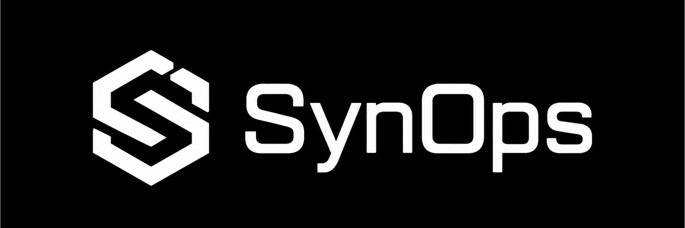

Théâtre Sahel · Poste avancé isolé
Données fictives et non sensibles
Données fictives et non sensibles
Théâtre Sahel · Poste avancé isolé
SynOps
Assistant génératif de médiation sémantique
Une opération. Des sources hétérogènes. Une chaîne de décision à éclairer.
Réseau
instable
Énergie
limitée
Niveau
tactique
Poste avancé isolé, en plein Sahel.
La friction du terrain est maximale.
La friction du terrain est maximale.
Drone ISR
HOSTILE_MOVEMENT
Unité Terre
ENGAGEMENT_APPUI_FEU
Forces alliées
TECHNICAL
SIGINT
BRAVO_SECURE
Mission SynOps
Transformer des messages opérationnels hétérogènes en compréhension commune, expliquée et contrôlée.
Du premier message capté jusqu'à l'arbitrage final.